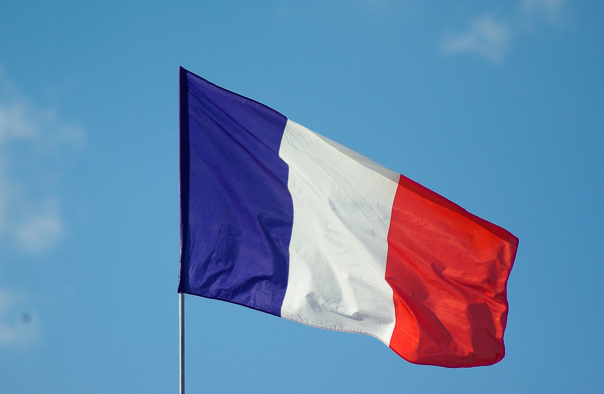

Фра́нция
Фра́нция (фр. France, [fʁɑ̃s] Информация о файле слушать), официальное название Францу́зская Респу́блика[9] (фр. République française, [ʁe.py.blik fʁɑ̃.sɛz] Информация о файле слушать) — трансконтинентальное государство, включающее основную территорию в Западной Европе и ряд заморских регионов и территорий. Столица — Париж. Девиз Республики — «Свобода, Равенство, Братство», её принцип — правление народа, народом и для народа[10].
Название страны происходит от этнонима древнегерманского племени франков, несмотря на то, что большинство населения Франции имеет смешанное галло-романское происхождение и говорит на языке романской группы.
Франция является ядерной державой, членом НАТО и одним из пяти постоянных членов Совета Безопасности ООН. С 1950-х годов — одно из государств, участвующих в создании Европейского союза.
Население — 65 595 620 человек в метрополии и 66 991 000 человек — с учётом заморских владений (оценка на 1 января 2017)[2], в том числе около 90 % — граждане Франции. Верующие — преимущественно католики (80 % от числа верующих или 43 % от всего населения), при этом 45 % населения заявляют, что не принадлежат ни к одной религии[11].
Законодательный орган — двухпалатный парламент (Сенат и Национальное собрание). Административно-территориальное деление: 18 регионов (13 в метрополии и 5 заморских регионов), включающих 101 департамент (96 в метрополии и 5 заморских департаментов)[12], 5 заморских сообществ и 3 административно-территориальных образования с особым статусом.

Регионы Франции
Франция делится на 18 регионов, из которых 12 находятся на европейском континенте, один (Корсика) — на острове Корсика, а ещё пять — заморские. Регионы не обладают юридической автономией, но могут устанавливать свои налоги и утверждать бюджет. 18 регионов разделяются на 101 департамент, а также Лионскую метрополию, которые состоят из 342 округов и 4039 кантонов. Основой Франции являются 36 682 коммуны. Деление на департаменты и коммуны сравнимо с делением России на районы и городские/сельские образования.
Заморские владения Франции Департамент Парижа состоит из единственной коммуны. Каждый из пяти заморских регионов (Гваделупа, Мартиника, Французская Гвиана, Реюньон, Майотта) состоят из единственного департамента. У региона Корсика (включающего 2 департамента) — специальный статус административно-территориального образования, отличающийся от других регионов метрополии (континентальной Франции). Имеет самостоятельные органы управления, не подчиняющиеся центру. В 2003 референдум об объединении 2 департаментов Корсики провалился. Все эти регионы являются частью Европейского союза.
Также можно сказать, что в состав Французской Республики входят: 1. Метрополия (разделена на 13 регионов, 96 департаментов и Лионскую метрополию). 2. 5 заморских департаментов: Гваделупа, Мартиника, Гвиана, Реюньон, Майотта[35]. 3. 5 заморских территорий: Французская Полинезия, острова Уоллис и Футуна, Сен-Пьер и Микелон, Сен-Бартелеми, Сен-Мартен. 4. 3 территории, имеющие особый статус: Новая Каледония, Клиппертон, Французские Южные и Антарктические территории.
Физико-географическая характеристика
Географическое положение Большая часть Франции расположена в Западной Европе, её материковая часть на северо-востоке граничит с Бельгией, Люксембургом и Германией, на востоке — со Швейцарией, на юго-востоке — с Монако и Италией, на юго-западе — с Испанией и Андоррой, на севере имеется морская граница с Великобританией. Францию омывают четыре водных пространства (Ла-Манш, Атлантический океан, Северное море и Средиземное море). На западе и севере территория страны омывается Атлантическим океаном (Бискайским заливом и проливом Ла-Манш), на юге — Средиземным морем (Лионским заливом и Лигурийским морем). Протяженность морских границ составляет 5500 км.
Франция является самой крупной по территории страной Западной Европы: она занимает почти одну пятую часть территории Европейского Союза, имеет обширные морские пространства (уникальная экономическая зона простирается на территории в 11 млн кв. км).
Также в состав государства входят остров Корсика в Средиземном море и более двадцати заморских департаментов и зависимых территорий. Общая площадь страны составляет 547 030 км² (674 685 км² вместе с заморскими владениями).